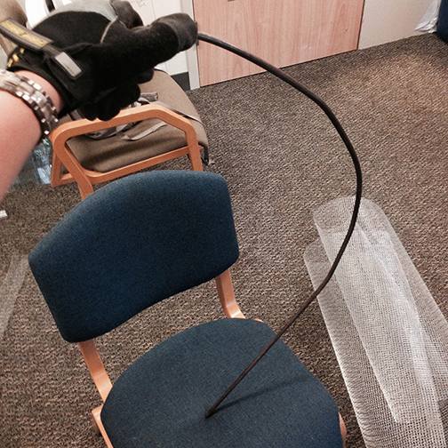

CD Shard Dragon Sculpture
Posted on November 4th, 2016 at 9:45 PM
This piece was commissioned by the Director of the Engineering Honors Program at CU Boulder.
The dragon is built on top of an old brake rotor. It is covered with a protective coating to keep it from rusting.

The base of the dragon is made of 3/8 inch steel rod. I bent it by hand to shape it, and then used a MIG welder to tack the pieces together.

After the pieces were tacked together, I welded the feet to the brake rotor. I then built the frame out of wire mesh.
The dragon's armor is made out of 22 gauge sheet metal. I used a metal band saw to cut out the individual pieces and then used a hammer and an anvil to shape them.
In order to correctly put together the pieces on the dragon, I used hot glue on the outside of the metal to glue them together in the correct shape around the frame.
I then used JB Weld to glue together the inside. It would take about 8 hours to fully cure. After which I would pull off the hot glue on the outside.
The front face plate was built in a similar manner, and is built out of 15 individual pieces. I cut each individual CD piece using heavy duty scissors. I would then place them using hot glue. At a lower setting, the glue would set in a few seconds. The stomach consists of regular CDs in where I cut off the outer ring and further cut it into segments.
The purple CDs are actually recordable DVDs. The coating on them gives them the purple color. However they are more difficult to work with because they are prone to shattering.
The eyes consist of CD's and cat-eye marbles. Since the marbles are black when they don’t have light shining though, I decided to program a Bluetooth Arduino with Neopixel LEDs to backlight the eyes.
I glued on magnets to the face an neck armor plates so that I could run the wires down the dragons back so that they could be replaced if needed.
The wings took the longest to complete. I could only get four shards from each CD, and both sides of the wings needed to be covered.
A heat gun was necessary to bend the CDs on the inside crease of the wing.
I used a Bluno to allow for the functionality of changing the color of the eyes via bluetooth with an app.
View Bluno Code on GithubHere you can see the Bluno attached to the underside of the brake rotor. I 3D printed a casing so that I could glue the casing to the rotor and remove the Bluno if needed. The wooden base that the brake rotor is resting in is a temporary measure to add stability to the sculpture.
The wires run up the dragons back under the armor to the Neopixel that rests under the faceplate.
The Neopixel lights up the marble to show the eyes.
This is the finished view of the back. The spines on the back plates are CDs that are hot glued onto the back. I then brushed a coating of JB Weld onto the glue to reinforce it as well as color it gray.
In total, it took over 300 hours to complete, and is composed of over a thousand CDs.